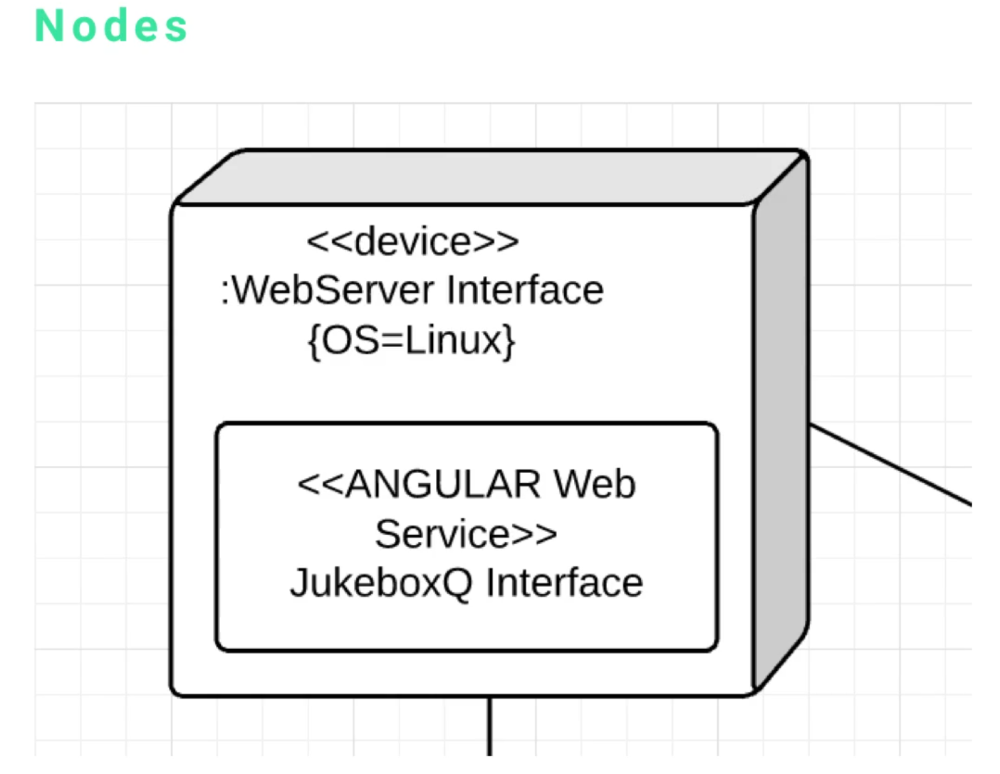
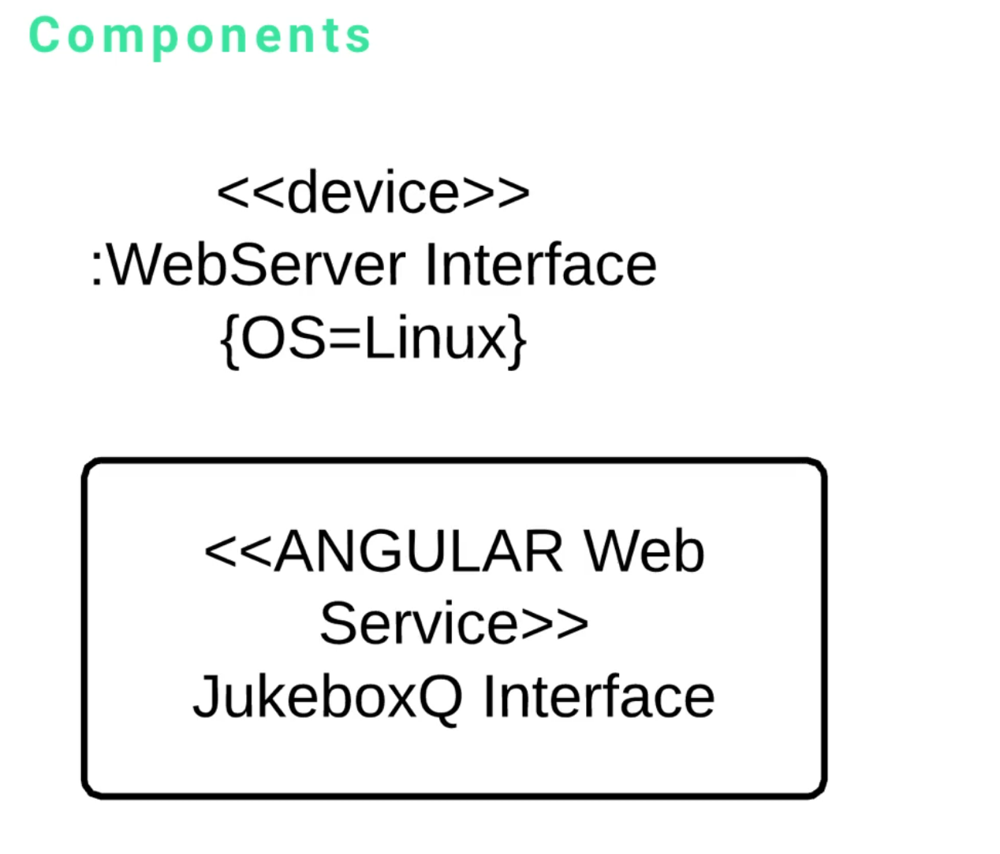
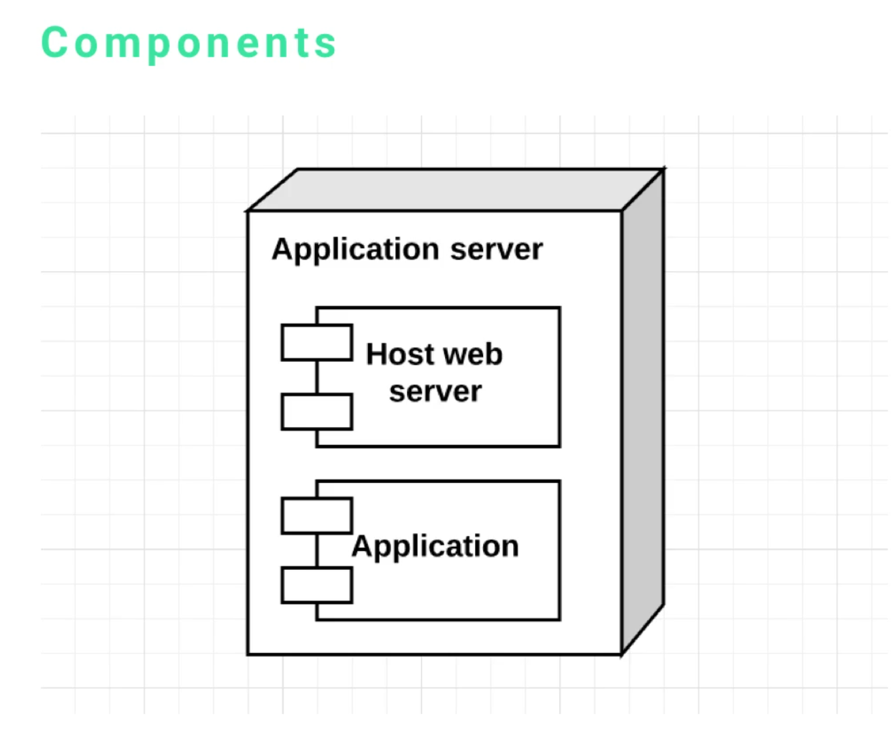
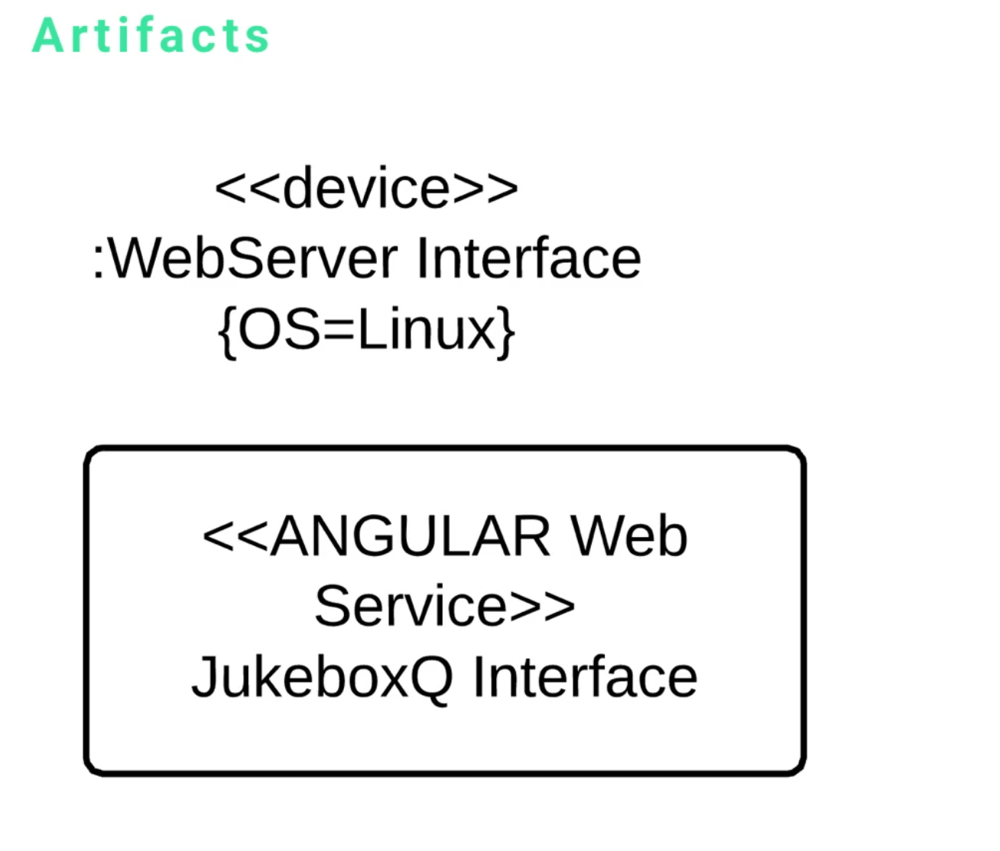
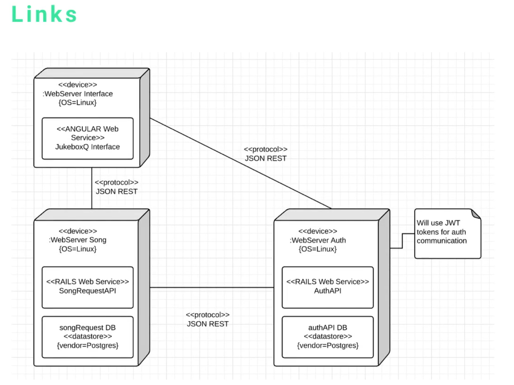
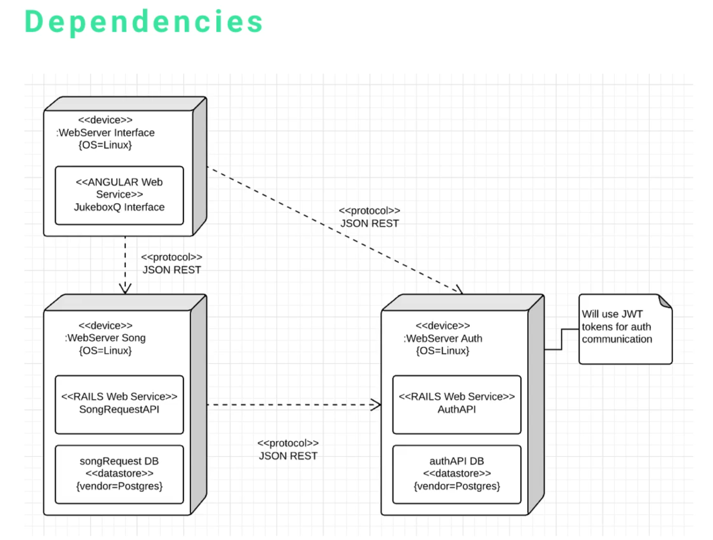
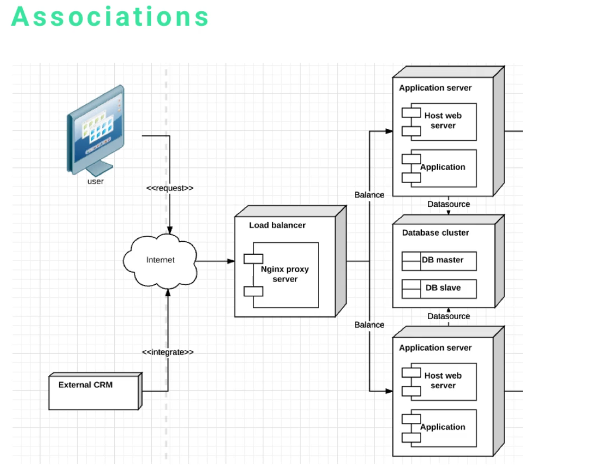

Important for the architecture of a project.
There are six elements that make up a deployment diagram;
The very first item is the node, it is one of the most important parts of the entire system. Essentially, every component of a deployment diagram is a node. Everything else is simply adding detail to that node or it's showing how the nodes are related to each other. The node itself is the actual real-world component. We have a web server and that web server has an angular front end system. A node could be anything from a server to a database or it could be an API. It's anything that you can communicate with.
There are a couple of different syntax options for components. The component is the kind of rounded rectangle storing the angular web service. A component could be an application, a web service, it could be the API itself or it could be a database, there are numerous things a component could be. Usually, it is the actual piece of software that manages communication and handles the business logic for the node that it resides on.
I also want to show you a separate syntax, the main reason is depending on the type of software that you use, you might have a couple of different options for showing and visualizing components. If you use something like an enterprise architect, your components inside a deployment diagram are going to look like this.
Artifacts are those items that are surrounded by the angle brackets (device and angular web service). When analyzing a deployment diagram, if I want to see what type of server I'm going to deploy or the type of application that I'm going to configure, these are the items that I look at.
I would be able to look at that bottom component and know that the server needs to work with angular, I would need to install a node, NPM, and other dependencies. If it said Rail's web service, then there would be different items that I would have to install.
This artifact is very descriptive, it will tell the architect how everything needs to be configured. You can also pass other parameters, just like you see at the very top. We have an artifact called "device" followed by a :webServer Interface which is also followed by {OS=Linux}.
This is a formal way of defining the type of server and the type of device in UML. There are times where I see them say "server" and then Linux and a version. I met with a number of other software engineers to make sure that I am presenting it in a way that conforms to the UML standard. One of the requests they had was to show you this formal type of interface for naming.
The links are those lines that are connecting each one of the nodes. We have a link from the angular front end to the authentication system. We have a link between the front end and the rails API and then we have a link between the API and the authentication system. That's a way of showing how each one of the nodes is connected.
Dependencies put a twist on what links do. Links connect our items, if we want to be more specific, we can add dependencies. Dependencies are represented by that dotted line with arrows going in the direction of the node. It shows what other nodes it depends on. At a cursory glance, you'd be able to look at this and understand that the angular front end depends on the auth system and it also depends on the API. The API depends on the auth system and you can see that simply by knowing that it's a dotted line with arrows going to each one of those other nodes.
The association element is very similar to the link and the dependency. It is a way of connecting all of the nodes and showing how they're associated. In this case, we have an entire system that represents how a user and an API can connect with a web application that leverages a load balancer. We're not going to focus on how load balancers work, however, by looking at this system you can tell that a load balancer can take in a request from the Internet and then maps that to various applications servers.
When I see something like this, it's helpful for me to understand what has to be done from a deployment strategy. I know that I'm going to:
I'm going to have to set up a number of items that this deployment diagram essentially gives me a recipe for.
Here we have a music request service, this service is going to allow users to log in and then build playlists based on different songs that they want to pick out. This is a real-world application that I'm currently building now as we speak, I thought this would be a nice time to be able to see the deployment diagram that I built. This would be a challenging system to write by hand, with a simple type of diagram we can easily see how everything fits together.
Let's start off with the very top left node, we have a regular web service, this is going to be the user interface for the entire system. We can see that it needs to be on some type of device, that's the artifact. I added some additional details so we have an operating system of Linux and then we have a component inside that's going to leverage angular.
This has a few dependencies. It has a dependency on the API itself, which is going to be the backend that manages all of the data and the majority of the business logic, then it also has a dependency on the authentication system.
So it's going to connect to two different systems
If you were to show this to me, I could see that you had an angular front end communicating with a Rails API and an authentication system. I'd then have some clues on how to build the system.
Talking about dependencies, this is a great example to analyze how dependencies work in software. We have Angular front end (we've covered its dependencies) but the authentication system technically has no set of dependencies. The reason for that is because of the way dependencies work in general. Dependency really means the system would not be able to function properly without whatever it's depending on.
The Angular front end needs dependencies, imagine if you went to it and it had no data, you couldn't log in. The authentication system, on the other hand, does not care about the angular front end, you could swap it out with a re-act front end and it would not care in the least. It simply takes in requests and gives responses, it does not depend on those other systems.
A system between node is the rails API. Technically it doesn't care or depend on the front end either. It simply is an API that takes in requests and then gives responses. However, it does have a dependency on the authentication system, the reason is that sometimes the responses are coming in and it is going to communicate with that auth system to ensure that it was a valid request.
That is a very common pattern you'll see where you'll have a javascript front end with a rails back end, many times between the two there will be some type of authentication system.
Each of these nodes is very similar in regards to its structure. It has a set of artifacts and components inside. You can use notes and comments to give more description for the developers, I noted that this is going to use JWT tokens for auth communication.
If I hand this to a Rails developer, this will give them a set of instructions on what to build.